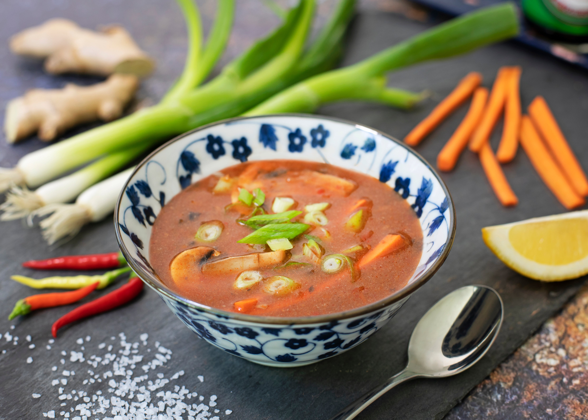

Pasta Fazool

A hearty shell pasta and bean soup, perfectly served with warm, crusty bread.
Ingredients
- 350g of conchiglie pasta
- 2 tablespoons of dried rosemary
- 1 x 400g tin of borlotti beans
- 2 x 400g tin of cannellini beans
- 2 vegetable stock cubes
- 1 litre of boiling water
- This Isn't Bacon Plant Based Lardons (120g)
- 5 tablespoons of olive oil
- Salt to taste
- (Optional) Crusty bread
Method
- Heat the oil in a large saucepan over a medium hear and cook the
lardons for 5 minutes.
- Add in the rosemary and continue to cook for a further 2 minutes
- Pour in the beans with the juices from the tins, stir everything together
and cook for 5 minutes
- Add in the stock cubes with the boiling water. Stir, lower the heat and allow
to simmer for 15 minutes with the lid half on/ . Stir every 5 minutes.
- Add the pasta to the saucepan and cook the pasta in the bean sauce over a low heat.
Season to taste. If the salt looks too thick stir in a glass of hot water from the kettle.
- Once the pasta is al dente, turn off the heat and allow to rest for 2 minutes before serving
- Divide the pasta into bowls and serve with warm crusty bread
Back to Home